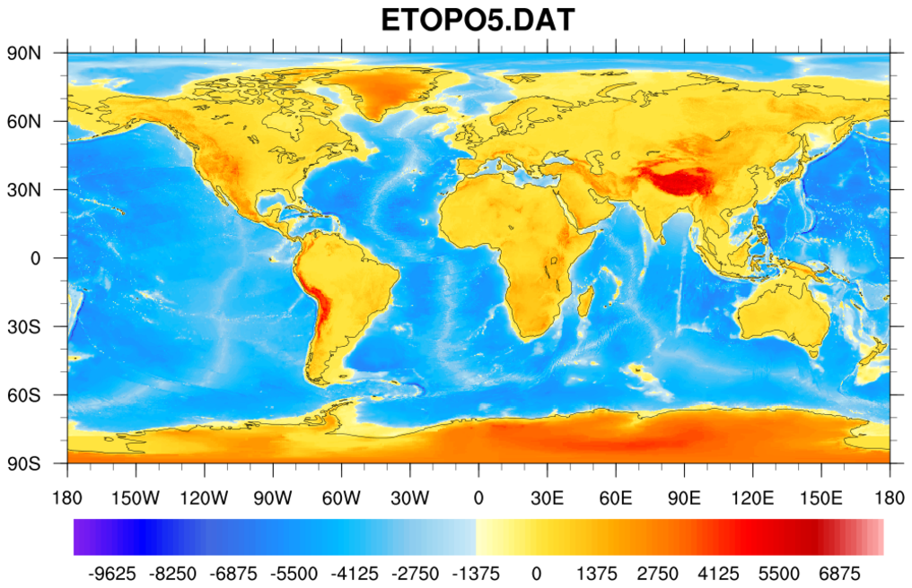
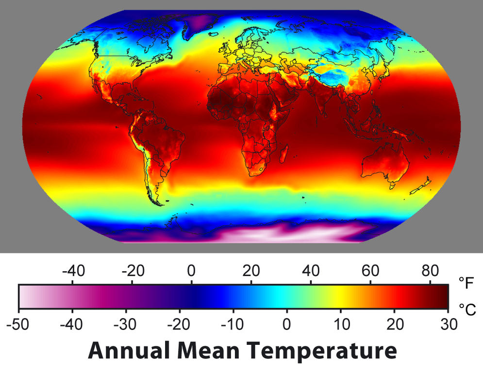

Discontinuous Regression Surface Fitting
Group Project
Statistics Comprehensive
Introduction
- What are we going to do?
- Informal problem statement goes here.
- Why are we interested?
- Not just another new type of regression. It has got many practical applications. For example: (contd.)
-
Image Denoising:
$\Longrightarrow$
-
Working with Elevation data or Temparature Data:
 
V Slide 1
$$y=x^2$$
V Slide 2
$$(a+b)^2=a^2+2ab+b^2$$
$$y=x^3$$